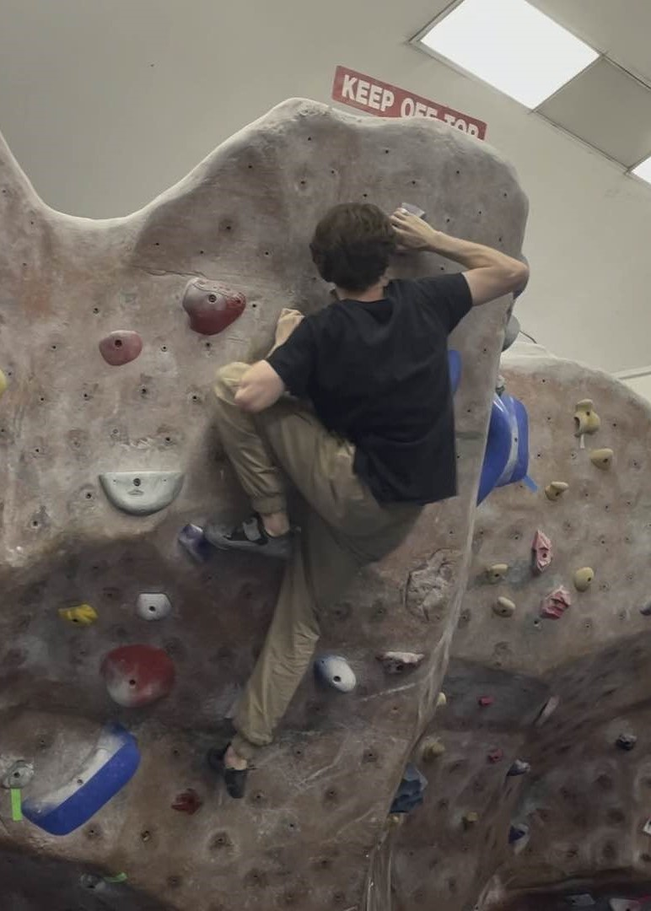

Welcome to my Portfolio, my name is Daniel Smirnoff. Little bit about me, I'm an extremely passionate and driven game developer, I appreciate game development as an art form and am constantly surprised by the amount of creativity and innovation behind them. For me personally I enjoy creating challenging and thought provoking experiences where players can experience a story, face hardships and eventually overcome their problems.
My hobbies outside of game development include rock climbing, gaming and going to the gym. Personally I enjoy rock climbing because of its problem solving aspect, I have always enjoyed gaming and believe I have to play games in order to understand how and why they appeal to players.
